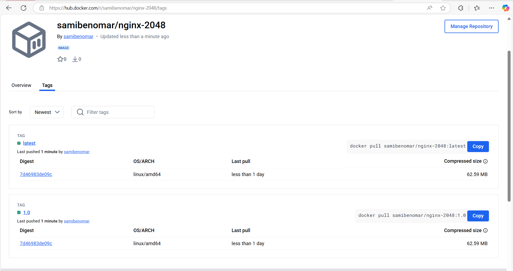
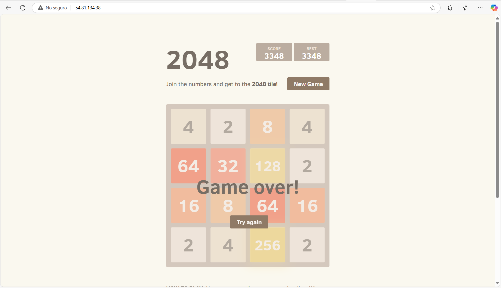
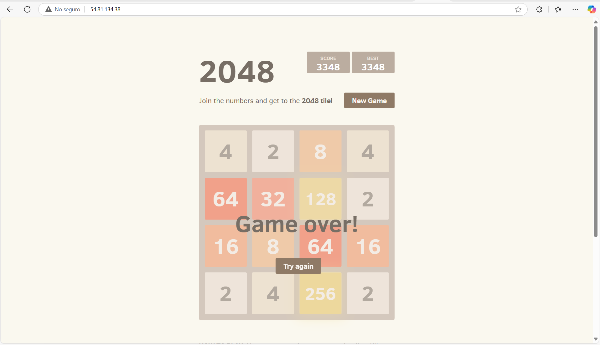

Practica 5-4
Docker Nginx 2048
Para la creación de esta imagen he creado el siguiente Dockerfile:
FROM ubuntu:latest
RUN apt-get update && apt-get install -y nginx git && \
rm -rf /var/lib/apt/lists/*
RUN rm -rf /var/www/html/*
RUN git clone https://github.com/josejuansanchez/2048 /var/www/html/
EXPOSE 80
CMD ["nginx", "-g", "daemon off;"]
Comandos para construir la imagen
docker build -t <tu-usuario> .
2.
docker login -u <tu-usuario>
3.
dock-er tag nginx-2048 tu-usuario/nginx-2048:1.0
docker tag nginx-2048 tu-usuario/nginx-2048:latest
4.
docker push tu-usuario/nginx-2048:latest
docker push tu-usuario/nginx-2048:1.0

Docker Compose
services:
web:
image: samibenomar/nginx-2048:latest
ports:
- "80:80"
 

Automatización con GitHub Actions
En los secretos del repositorio creo dos secretos que son el usuario de doker.com y el token de seguridad.
name: Docker Publish
on:
push:
branches:
- main
jobs:
push_to_registry:
name: Push Docker image a Docker Hub
runs-on: ubuntu-latest
steps:
- name: Comprueba repositorios
uses: actions/checkout@v2
- name: Login a Docker Hub
run: echo "${{ secrets.DOCKERHUB_TOKEN }}" | docker login -u "${{ secrets.DOCKERHUB_USERNAME }}" --password-stdin
- name: Build y push Docker image
run: |
docker build -t ${{ secrets.DOCKERHUB_USERNAME }}/nginx-2048:latest ./image
docker push ${{ secrets.DOCKERHUB_USERNAME }}/nginx-2048:latest